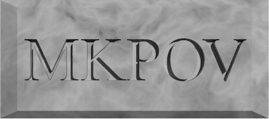

MKPOV is a library of header/include files for the Persistence of Vision Raytracer (POV-Ray).
These files contain a variety of textures, functions, and other pieces of code which I have written over time and found to be useful.
Everything here has been tested under POV-Ray 3.7, however,
it should work with any previous version of the software. The default
noise_generator in POV-Ray 3.1 and below is different than in
later versions. Using these files with version ≤ 3.1 (or a newer
version with noise_generator other than 2) will cause
anything reliant on noise to differ slightly in appearance from example images
on this site.
More will be added to this library over time — see the commit log for updates.
Click a filename for details and examples.
| File | Description |
| mknormals.inc | Assorted normals. |
| mkskies.inc | Skies, pigments for sky spheres. |
| mkstones.inc | Stone textures. Loads all mkstones files. |
| mkstones1.inc | Stone textures MK_Stone1 through MK_Stone12. |
| mktextures.inc | Misc. other textures. |
| positioning.inc | Macros for positioning objects. |
Download as a
zip
file or clone from GitHub.
Copy files into one of POV-Ray's library paths, or #include
individual files within a scene/INI file.